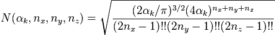
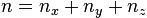
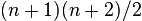
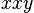
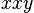
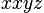
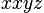
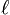
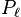
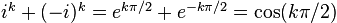

5. Gaussian basis functions¶
5.1. Introduction¶
Horton supports contracted Gaussian basis functions, which have in general the following form:

where  is the contraction length, is a contraction
coefficient,
is the contraction length, is a contraction
coefficient,  is a normalization constant, is a Cartesian
polynomial,
is a normalization constant, is a Cartesian
polynomial,  is an exponent and
is an exponent and  is the
center of the basis function. The summation over is
conventionally called a contraction of primitive Gaussian basis functions.
The normalization of each primitive depends on both the polynomial and the
exponent and is defined by the following relation:
is the
center of the basis function. The summation over is
conventionally called a contraction of primitive Gaussian basis functions.
The normalization of each primitive depends on both the polynomial and the
exponent and is defined by the following relation:

Likewise, the contraction coefficients are defined such that the total contraction satisfies the same normalization condition:
There are two common forms of the polynomial: Cartesian and pure (harmonic) basis functions. Both types will be defined below, together with some conventions that are needed for the implementation in Horton.
5.2. Cartesian¶
When the polynomial consists of a single term as follows:

with  ,
,  ,
,  , zero or positive integer powers, one
speaks of Cartesian Gaussian basis functions. One refers to the sum of the
powers as the angular momentum of the Cartesian Gaussian basis. The
normalization constant is:
, zero or positive integer powers, one
speaks of Cartesian Gaussian basis functions. One refers to the sum of the
powers as the angular momentum of the Cartesian Gaussian basis. The
normalization constant is:

In practice one combines all basis functions of a given angular momentum (or algebraic order). A basis specification typically only mentions the total angular momentum, and it is assumed that all polynomials of that order are included in the basis set. The number of basis functions, i.e. the number of polynomials, for a given angular momentum, , is . For the implementation, one must fix a certain ordering of these polynomials. In Horton, the ordering is simply alphabetical.
The first five angular momenta and the corresponding polynomials are listed in the table below.
| Symbol | Angular momentum | # | Polynomials |
|---|---|---|---|
| S | 0 | 1 |  |
| P | 1 | 3 |  , , , ,  |
| D | 2 | 6 |  , ,  , ,  , ,  , ,  , ,  |
| F | 3 | 10 |  , , , ,  , ,  , ,  , ,  , , , ,  , ,  , , |
| G | 4 | 15 | ,  , ,  , , , , , ,  , ,  , , , ,  , , , , , ,  , ,  , , , ,  |
5.3. Pure or Harmonic¶
When the polynomial is a real regular solid harmonic, one speaks of pure Gaussian basis functions:

where  and
and  are cosine and sine-like real regular
solid harmonics, defined as follows:
are cosine and sine-like real regular
solid harmonics, defined as follows:

The index  is a zero or positive. Due to the presence of the factor
 , these are homogeneous polynomials, i.e. linear combinations of the
Cartesian polynomials listed above. The following definition for the spherical
harmonics is used:
, these are homogeneous polynomials, i.e. linear combinations of the
Cartesian polynomials listed above. The following definition for the spherical
harmonics is used:

which has a norm

for the sake of compatibility with the unnormalized Cartesian s- and p-type functions above. The normalization constant of a pure Gaussian basis function is:
In practical applications, one always combines all the basis functions of a
given angular momentum. A basis specification typically only mentions the total
angular momentum, and it is assumed that all polynomials of that
order are included in the basis set. The number of basis functions, i.e. the
number of polynomials, for a given angular momentum, , is
. For the implementation, one must fix a certain ordering of
these polynomials. The ordering in Horton is based on the angular momentum
number,  . When
. When  , the cosine-like functions is preceded by
the sine-like function.
, the cosine-like functions is preceded by
the sine-like function.
The first five angular momenta and the corresponding polynomials are listed in the table below.
| Symbol | Angular momentum | # | Polynomials |
|---|---|---|---|
| S | 0 | 1 |  |
| P | 1 | 3 |  , ,  , ,  |
| D | 2 | 5 |  , ,  , ,  , ,  , ,  |
| F | 3 | 7 |  , ,  , ,  , ,  , ,  , ,  , ,  |
| G | 4 | 9 |  , ,  , ,  , ,  , ,  , ,  , ,  , ,  , ,  |
5.4. Transformation from Cartesian to pure¶
Let us now derive convenient expressions for these real solid harmonics in terms
of Cartesian coordinates. The function  is the
associated Legendre Polynomial. For positive we have:
is the
associated Legendre Polynomial. For positive we have:

where  is the ordinary Legendre polynomial of order .
Note that the factors  are compensated in the definition of the
real solid harmonics. Substitution of these definitions leads to the following
form for the spherical harmonics:
are compensated in the definition of the
real solid harmonics. Substitution of these definitions leads to the following
form for the spherical harmonics:

For , the real spherical harmonics are first written as follows:

It is conventional to factor out the -dependent part (which also has
some pure -dependence). Making use of  , one gets:
, one gets:

with

For the  -dependence one has to following polynomials for the
cosine and sine-like functions, respectively:
-dependence one has to following polynomials for the
cosine and sine-like functions, respectively:


where we made use of  and . Putting it all together, we have:

Also for the case  , one has a similar form:
, one has a similar form:

These expressions allow one to write the real solid harmonics in terms of a homogeneous polynomial of Cartesian coordinates. The following table is generated by the script tools/harmonics.py, which uses Sympy for the symbolic manipulations:
![C_0^0(x,y,z) & = 1 \\
C_1^0(x,y,z) & = z \\
C_1^1(x,y,z) & = x \\
S_1^1(x,y,z) & = y \\
C_2^0(x,y,z) & = - \frac{1}{2} r^{2} + \frac{3}{2} z^{2} \\
C_2^1(x,y,z) & = \sqrt{3} x z \\
S_2^1(x,y,z) & = \sqrt{3} y z \\
C_2^2(x,y,z) & = \frac{1}{2} \sqrt{3} \left(x^{2} - y^{2}\right) \\
S_2^2(x,y,z) & = \sqrt{3} x y \\
C_3^0(x,y,z) & = - \frac{3}{2} r^{2} z + \frac{5}{2} z^{3} \\
C_3^1(x,y,z) & = \frac{1}{6} \sqrt{6} x \left(- \frac{3}{2} r^{2} + \frac{15}{2} z^{2}\right) \\
S_3^1(x,y,z) & = \frac{1}{6} \sqrt{6} y \left(- \frac{3}{2} r^{2} + \frac{15}{2} z^{2}\right) \\
C_3^2(x,y,z) & = \frac{1}{2} \sqrt{15} z \left(x^{2} - y^{2}\right) \\
S_3^2(x,y,z) & = \sqrt{15} x y z \\
C_3^3(x,y,z) & = \frac{1}{4} \sqrt{10} \left(x^{3} - 3 x y^{2}\right) \\
S_3^3(x,y,z) & = \frac{1}{4} \sqrt{10} \left(3 x^{2} y - y^{3}\right) \\
C_4^0(x,y,z) & = \frac{3}{8} r^{4} - \frac{15}{4} r^{2} z^{2} + \frac{35}{8} z^{4} \\
C_4^1(x,y,z) & = \frac{1}{10} \sqrt{10} x \left(- \frac{15}{2} r^{2} z + \frac{35}{2} z^{3}\right) \\
S_4^1(x,y,z) & = \frac{1}{10} \sqrt{10} y \left(- \frac{15}{2} r^{2} z + \frac{35}{2} z^{3}\right) \\
C_4^2(x,y,z) & = \frac{1}{30} \sqrt{5} \left(- \frac{15}{2} r^{2} + \frac{105}{2} z^{2}\right) \left(x^{2} - y^{2}\right) \\
S_4^2(x,y,z) & = \frac{1}{15} \sqrt{5} x y \left(- \frac{15}{2} r^{2} + \frac{105}{2} z^{2}\right) \\
C_4^3(x,y,z) & = \frac{1}{4} \sqrt{70} z \left(x^{3} - 3 x y^{2}\right) \\
S_4^3(x,y,z) & = \frac{1}{4} \sqrt{70} z \left(3 x^{2} y - y^{3}\right) \\
C_4^4(x,y,z) & = \frac{1}{8} \sqrt{35} \left(x^{4} - 6 x^{2} y^{2} + y^{4}\right) \\
S_4^4(x,y,z) & = \frac{1}{8} \sqrt{35} \left(4 x^{3} y - 4 x y^{3}\right)](_images/math/3fb799fdecc6273aa34951aab872c252bf554d4a.png)
Note that these functions are not normalized yet. The formatting of the list above is not great because of the limitations of Sympy’s latex printer.
The script tools/harmonics.py also generates the transformation matrices from Cartesian to pure basis functions. These do take into account the normalization.
![\left(\begin{array}{c}
X(C_0^0)
\end{array}\right)
&=
\left(\begin{array}{c}
1 \\
\end{array}\right)
\left(\begin{array}{c}
X(1)
\end{array}\right)
\\
\left(\begin{array}{c}
X(C_1^0) \\ X(C_1^1) \\ X(S_1^1)
\end{array}\right)
&=
\left(\begin{array}{ccc}
0 & 0 & 1 \\
1 & 0 & 0 \\
0 & 1 & 0 \\
\end{array}\right)
\left(\begin{array}{c}
X(x) \\ X(y) \\ X(z)
\end{array}\right)
\\
\left(\begin{array}{c}
X(C_2^0) \\ X(C_2^1) \\ X(S_2^1) \\ X(C_2^2) \\ X(S_2^2)
\end{array}\right)
&=
\left(\begin{array}{cccccc}
- \frac{1}{2} & 0 & 0 & - \frac{1}{2} & 0 & 1 \\
0 & 0 & 1 & 0 & 0 & 0 \\
0 & 0 & 0 & 0 & 1 & 0 \\
\frac{1}{2} \sqrt{3} & 0 & 0 & - \frac{1}{2} \sqrt{3} & 0 & 0 \\
0 & 1 & 0 & 0 & 0 & 0 \\
\end{array}\right)
\left(\begin{array}{c}
X(xx) \\ X(xy) \\ X(xz) \\ X(yy) \\ X(yz) \\ X(zz)
\end{array}\right)
\\
\left(\begin{array}{c}
X(C_3^0) \\ X(C_3^1) \\ X(S_3^1) \\ X(C_3^2) \\ X(S_3^2) \\ X(C_3^3) \\ X(S_3^3)
\end{array}\right)
&=
\left(\begin{array}{cccccccccc}
0 & 0 & - \frac{3}{10} \sqrt{5} & 0 & 0 & 0 & 0 & - \frac{3}{10} \sqrt{5} & 0 & 1 \\
- \frac{1}{4} \sqrt{6} & 0 & 0 & - \frac{1}{20} \sqrt{30} & 0 & \frac{1}{5} \sqrt{30} & 0 & 0 & 0 & 0 \\
0 & - \frac{1}{20} \sqrt{30} & 0 & 0 & 0 & 0 & - \frac{1}{4} \sqrt{6} & 0 & \frac{1}{5} \sqrt{30} & 0 \\
0 & 0 & \frac{1}{2} \sqrt{3} & 0 & 0 & 0 & 0 & - \frac{1}{2} \sqrt{3} & 0 & 0 \\
0 & 0 & 0 & 0 & 1 & 0 & 0 & 0 & 0 & 0 \\
\frac{1}{4} \sqrt{10} & 0 & 0 & - \frac{3}{4} \sqrt{2} & 0 & 0 & 0 & 0 & 0 & 0 \\
0 & \frac{3}{4} \sqrt{2} & 0 & 0 & 0 & 0 & - \frac{1}{4} \sqrt{10} & 0 & 0 & 0 \\
\end{array}\right)
\left(\begin{array}{c}
X(xxx) \\ X(xxy) \\ X(xxz) \\ X(xyy) \\ X(xyz) \\ X(xzz) \\ X(yyy) \\ X(yyz) \\ X(yzz) \\ X(zzz)
\end{array}\right)
\\
\left(\begin{array}{c}
X(C_4^0) \\ X(C_4^1) \\ X(S_4^1) \\ X(C_4^2) \\ X(S_4^2) \\ X(C_4^3) \\ X(S_4^3) \\ X(C_4^4) \\ X(S_4^4)
\end{array}\right)
&=
\left(\begin{array}{ccccccccccccccc}
\frac{3}{8} & 0 & 0 & \frac{3}{140} \sqrt{105} & 0 & - \frac{3}{35} \sqrt{105} & 0 & 0 & 0 & 0 & \frac{3}{8} & 0 & - \frac{3}{35} \sqrt{105} & 0 & 1 \\
0 & 0 & - \frac{3}{28} \sqrt{70} & 0 & 0 & 0 & 0 & - \frac{3}{28} \sqrt{14} & 0 & \frac{1}{7} \sqrt{70} & 0 & 0 & 0 & 0 & 0 \\
0 & 0 & 0 & 0 & - \frac{3}{28} \sqrt{14} & 0 & 0 & 0 & 0 & 0 & 0 & - \frac{3}{28} \sqrt{70} & 0 & \frac{1}{7} \sqrt{70} & 0 \\
- \frac{1}{4} \sqrt{5} & 0 & 0 & 0 & 0 & \frac{3}{14} \sqrt{21} & 0 & 0 & 0 & 0 & \frac{1}{4} \sqrt{5} & 0 & - \frac{3}{14} \sqrt{21} & 0 & 0 \\
0 & - \frac{1}{14} \sqrt{35} & 0 & 0 & 0 & 0 & - \frac{1}{14} \sqrt{35} & 0 & \frac{3}{7} \sqrt{7} & 0 & 0 & 0 & 0 & 0 & 0 \\
0 & 0 & \frac{1}{4} \sqrt{10} & 0 & 0 & 0 & 0 & - \frac{3}{4} \sqrt{2} & 0 & 0 & 0 & 0 & 0 & 0 & 0 \\
0 & 0 & 0 & 0 & \frac{3}{4} \sqrt{2} & 0 & 0 & 0 & 0 & 0 & 0 & - \frac{1}{4} \sqrt{10} & 0 & 0 & 0 \\
\frac{1}{8} \sqrt{35} & 0 & 0 & - \frac{3}{4} \sqrt{3} & 0 & 0 & 0 & 0 & 0 & 0 & \frac{1}{8} \sqrt{35} & 0 & 0 & 0 & 0 \\
0 & \frac{1}{2} \sqrt{5} & 0 & 0 & 0 & 0 & - \frac{1}{2} \sqrt{5} & 0 & 0 & 0 & 0 & 0 & 0 & 0 & 0 \\
\end{array}\right)
\left(\begin{array}{c}
X(xxxx) \\ X(xxxy) \\ X(xxxz) \\ X(xxyy) \\ X(xxyz) \\ X(xxzz) \\ X(xyyy) \\ X(xyyz) \\ X(xyzz) \\ X(xzzz) \\ X(yyyy) \\ X(yyyz) \\ X(yyzz) \\ X(yzzz) \\ X(zzzz)
\end{array}\right)](_images/math/e6508a2b91374ec7e4ec45c8a1fde85f8575fd2a.png)
These transformations are implemented in horton/cartpure.c with sparse
matrix products for angular momenta up to  .
.